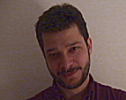
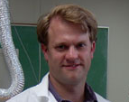

Dr. Larry J. Forney
Professor and Chair
Department of Biological Sciences
(208) 885-6280
lforney@uidaho.edu
Professor and Chair
Department of Biological Sciences
(208) 885-6280
lforney@uidaho.edu
Dr. James A. Foster
Professor
Department of Biological Sciences
(208) 885-7062
foster@uidaho.edu

Dr. Terrence Soule
Assistant Professor
Department of Computer Science
(208) 885-7789
tsoule@cs.uidaho.edu

Stephen Bent
Ph.D. student in Bioinformatics and Computational Biology
Department of Biological Sciences
(208) 885-2583
bent6487@uidaho.edu

Dr. Conrad Shyu
Bioinformatics and Computational Biology
shyu4751@gmail.com
Developer